Luna Sugimoto
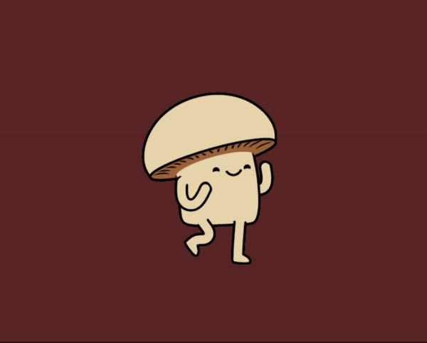
March 2nd
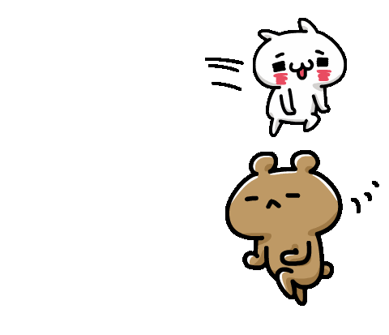
Purple, Pastel colors
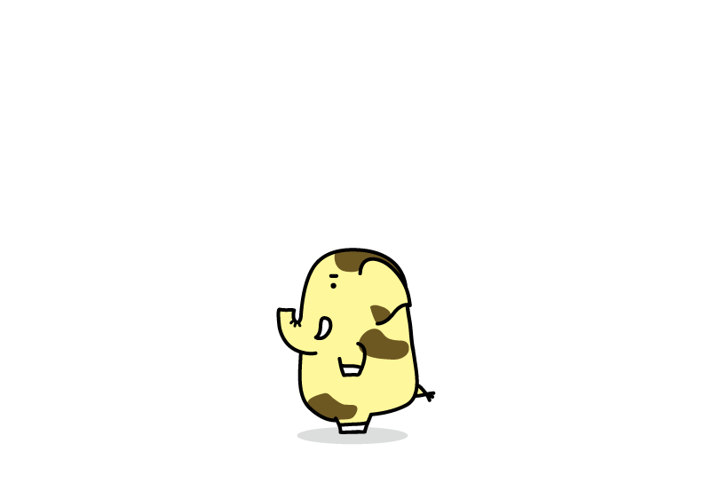
Japanese food
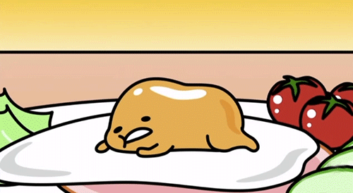
Fruit juice, Soda, Milk tea
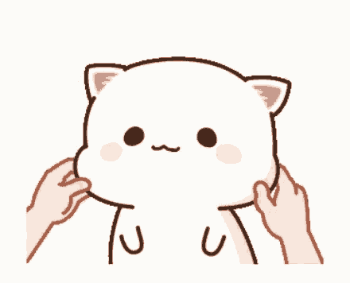
Japanese showe
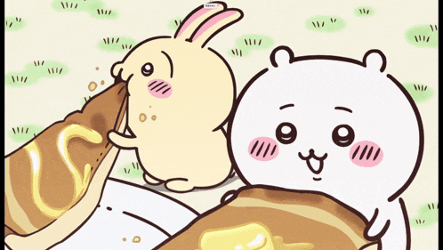
J-pop artist
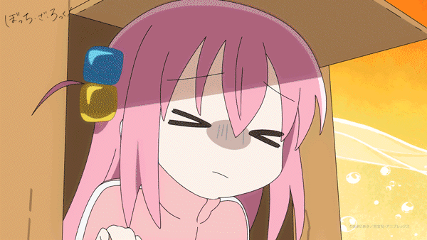
Japan,US,UK
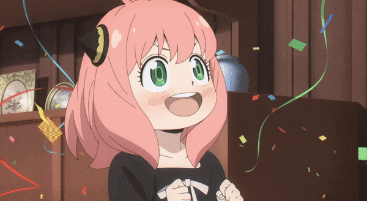
To be healthy and improve myself
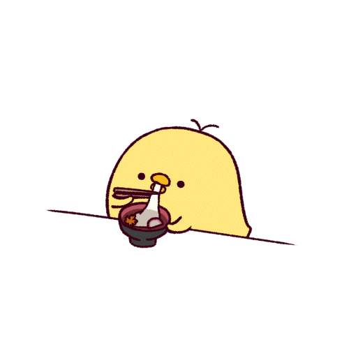
Kind,smart,active,passionate
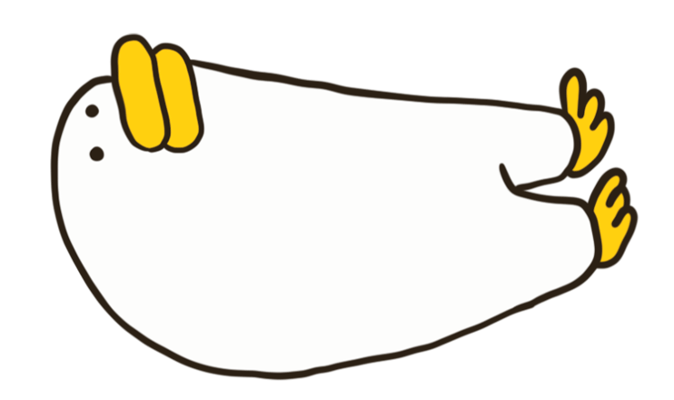
Smile and laugh a lot with my family and friend
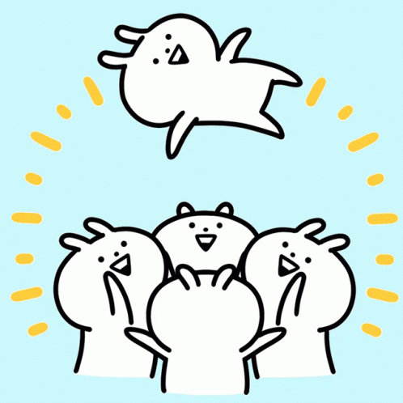
To to be UN staff
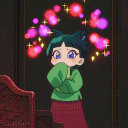
Watch anime and drama
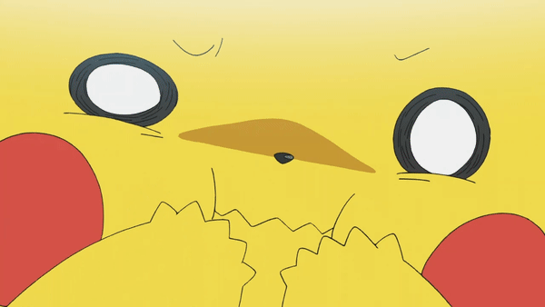
J-pop